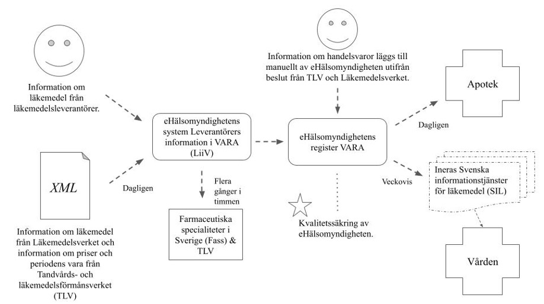

Blogg
Här finns tekniska artiklar, presentationer och nyheter om arkitektur och systemutveckling. Håll dig uppdaterad, följ oss på Twitter
Här finns tekniska artiklar, presentationer och nyheter om arkitektur och systemutveckling. Håll dig uppdaterad, följ oss på Twitter

Alla system som hanterar läkemedelsinformation kommer förr eller senare behöva anpassa sig till IDMP-standarder. I denna blogg tittar vi på vad IDMP är och hur långt man har kommit med införandet i Sverige.
Identification of Medicinal Products (IDMP) är en uppsättning standarder för utbyte av information om läkemedel som utvecklas av standardiseringsorganet ISO. European Medicines Agency (EMA, ”Europas läkemedelsverk”) och alla nationella läkemedelsmyndigheter i EU kommer, i enlighet med EU-föreskrifter, att behöva använda IDMP-standarderna. IDMP består av fem separata ISO-standarder. Dessa innehåller dataelement och strukturer för unik identifiering och utbyte av information om substanser, paketering, måttenheter, farmaceutiska produkter samt läkemedelsprodukter.
På Callista har jag turen att arbeta med kunniga och insatta kollegor som har bra koll på IDMP. Själv hade jag hunnit studera hälsoinformatik, intressera mig för läkemedelsinformatik sedan ett bra tag och börjat jobba på Fass innan jag för första gången hörde talas om IDMP. När min dåvarande chef berättade om IDMP var min första tanke: “Hur har jag missat detta?”. Jag tog på mig uppgiften att ta reda på mer om IDMP, speciellt om hur införandet i Sverige går. Det visade sig dock inte vara helt lätt att ta reda på hur långt Sverige kommit med införandet.
IDMP-standarderna kommer implementeras i faser enligt de fyra huvuddomänerna för masterdata i läkemedelsregleringsprocesser. Dessa är substans, produkt, organisation och referens (SPOR). I nuläget finns det ingen strikt tidsplan för implementationsfaserna. Målet med IDMP är att förenkla utbytet av läkemedelsinformation mellan länder, förbättra informationskvaliteten och öka patientsäkerhet. Strukturerad läkemedelsinformation, och därmed IDMP, är en del av både Vision e-hälsa 2025 och Nationella läkemedelsstrategin. Vidare har IDMP blivit mer aktuellt i Sverige i och med införandet av den nationella läkemedelslistan (NLL), eftersom informationsmängderna i NLL, så långt som möjligt, ska vara strukturerade enligt IDMP-standarderna.
Införandet av IDMP har visat sig vara ett väldigt stort arbete. Det är trots allt en standard som ska implementeras av alla läkemedelsmyndigheter i EU. Informationsstrukturen hos respektive läkemedelsmyndighet kommer i sin tur påverka alla aktörer som använder läkemedelsinformationen. Arbetet kräver förändring och anpassning på många nivåer. Detta kan man tydligare se i följande adaption av eHälsomyndighetens bild på flödet för läkemedelsinformation i Sverige. Bilden visar endast en handfull aktörer, system och register som använder läkemedelsinformation på ett eller annat sätt, men den visualiserar ändå hur mycket informationen faktiskt byggs på och delas.

Med denna bild i åtanke kan man tänka sig hur många aktörer som måste arbeta med IDMP, och hur många system som måste kunna ta emot och skicka läkemedelsinformation enligt IDMP-standarderna, bara i Sverige. Trots detta är det svårt att hitta detaljerad information om Sveriges arbete och införande av IDMP. En rapport som är väldigt informerande och samtidigt aktuell är publicerad av Läkemedelsverket (LV) och heter “Hur påverkas nationella aktörer av att IDMP införs som standard för läkemedelsinformation?”. I denna rapport redogörs för vilken nytta och eventuella risker införandet av IDMP innebär, vilka aktörer som berörs samt vilka behov som finns bland aktörerna. Bland annat uttrycktes vikten av att informera regioner om IDMP. Detta kan anses särskilt viktigt med tanke på de många upphandlingar av vårdinformationssystem som har gjorts i Sverige under de senaste åren.
För att gräva ytterligare i denna fråga pratade jag med Johan Aulin, som är verksamhetsarkitekt på LV. Han berättade att införandet av IDMP satte igång hos dem redan för ett par år sedan. Närmare betyder det att anpassningar till IDMP av dagens format på läkemedelsinformation, Nationella Produktlistan (NPL), har satt igång. Vidare förklarar han att LV är i ett läge där NPL-databasen ändå behöver bytas ut, och då är det IDMP-standarderna de ska hålla sig till så långt det går. Han uppskattade att cirka 50% av den nya databasen är byggd och att arbetet kommer pågå ett par år framåt. Dock poängterar han att bara för att NPL är anpassad till IDMP betyder det inte att andra system (t.ex. de som syns i bilden ovan) är det. Så även när databasen är färdigbyggd kommer LV att parallellt producera både de gamla och nya informationsstrukturerna under en, troligtvis, lång period. Detta förklarar varför IDMP inte har varit med på någon kravlista vid upphandling av vårdinformationssystem hittills. Att vänta till nästa omgång av upphandlingar är inte helt otänkbart för regioner. Vidare är det upp till var region att bestämma när och hur de ändrar i sina IT-system. Med andra ord kommer införande av IDMP bli en lång historia.
Sammanfattningsvis kan man säga att implementationen av IDMP är ett stort arbete som kommer kräva mycket anpassning nationellt, men för de flesta aktörer är det är ingen brådska just nu. Det stora problemet med IDMP vid denna tidpunkt, utöver dess komplexitet, är avsaknaden av bra information. Det är svårt att skaffa sig en uppfattning om hur arbetet går till hos olika aktörer. Vid detta lag har nog de flesta verksamheter som producerar läkemedelsinformation, t.ex. Läkemedelsleverantörer och LV, en bra idé om vad IDMP innebär. De som förmodligen har minst kunskap om, men stor nytta av, IDMP just nu är systemleverantörer och regioner. För att undvika att allt arbete kommer på en gång kan det vara klokt att redan nu börja fundera över vad anpassningar till IDMP skulle innebära. Förhoppningsvis kommer det bli lättare att tillgå information allteftersom IDMP börjar implementeras i större utsträckning.
Är du arkitekt eller utvecklare av ett system som hanterar läkemedelsinformation? Vill du veta mer eller diskutera vidare? Hör gärna av dig!